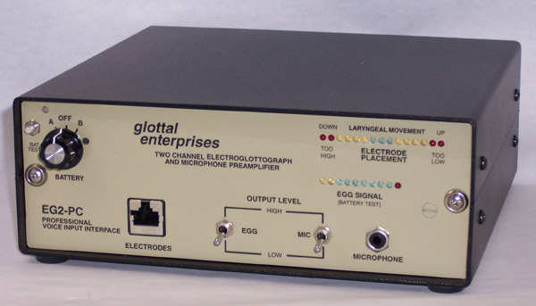

The Computer That Watched Your Throat
In 1987, a PC peripheral let you see your own vocal folds moving — even when you made no sound at all.
Most computer input devices measure something you do. A keypress, a mouse movement, a spoken word. You act; the machine responds. The Kay Visi-Pitch with electroglottograph measured something you can't consciously feel doing: the movement of your vocal folds, two tiny muscles deep inside your larynx, fluttering open and closed a hundred times a second to produce the voiced sounds that make you you.
And it measured them without a microphone. Without any sound at all.
The current through your neck
An electroglottograph works by passing a tiny, harmless 2-to-3-megahertz current between two gold-plated electrodes pressed against the sides of your neck, roughly where an Adam's apple sits. As your vocal folds open and close, the electrical impedance across your larynx changes — tissue conducts differently than air. The machine reads those impedance fluctuations and produces a waveform: a real-time trace of the physical contact between your vocal cords.
Think about what that means. This is not a recording of sound waves. It is not a measurement of muscle electricity, like EMG. It is a direct, mechanical readout of an internal movement you cannot see or feel. A computer watching your throat do its invisible work.
By 1987, the Kay Elemetrics Corporation had turned this technology into a clinical workstation. Their Visi-Pitch Model 6300 connected the EGG electrodes to an IBM PC/XT/AT through a custom ISA-bus ADC card. MS-DOS software drew pitch contours, intensity envelopes, and the characteristic double-humped EGG waveform on a CRT in real time. A patient sat with electrodes on their neck, made a sound — or tried to — and watched their own laryngeal dance unfold on screen.

Speech therapy as visual biofeedback
This real-time visual feedback was the clinical breakthrough. A voice therapy patient struggling with a breathy or strained phonation could see what their vocal folds were doing wrong — incomplete closure, irregular periodicity, too much tension — and attempt to correct it, watching the waveform smooth out in response. A singer could learn to control their vibrato by observing the undulation of their own EGG signal. A person learning to speak after throat surgery could practice subvocal movements and watch them register on screen before any audible sound emerged.
That last part is worth sitting with. The EGG produces a usable signal during silent phonation — when you move your vocal folds as if to speak but produce no audible sound. It works during whispering, too. It is, in a literal sense, a silent speech interface, deployed in clinics decades before the modern BCI research community began chasing the same goal with fMRI, surface EMG arrays, and implanted electrodes.
The strangeness of seeing your own biology
There is something faintly disorienting about interfaces of this kind. Most of the museum's artifacts are about extending the body outward — a glove that tracks your hand, a wand that senses your gesture, a joystick that pushes back. The electroglottograph points the other way. It is an instrument for introspection, a tool for making the invisible interior of the body visible, controllable, correctable.
The VISI-Pitch name tells you everything about the design philosophy: see your pitch, watch it, change it. The interaction loop is not command-and-response but observation-and-adjustment — a feedback cycle that treats the body not as a controller but as a process to be monitored and shaped.
The electroglottograph principle was invented in 1957 by a French researcher named Philippe Fabre, but it took three decades of refinement — at University College London, at Kay Elemetrics in New Jersey, at competing firms like Glottal Enterprises — before it became a clinical tool you could plug into a PC. The original, standalone Visi-Pitch Model 6087 (1977) was a beige metal box with a green-phosphor CRT and rotary knobs, a self-contained voice analysis lab. The 1987 PC version was the pivot: the moment when a specialized analog instrument became computer peripheral, when a voice stopped being something you heard and became something you saw.
Kay Elemetrics is gone now — acquired by Pentax Medical in 1993, absorbed eventually into Hoya Corporation, the KayPENTAX brand retired. But electroglottography survives in voice clinics and research labs, and the idea it proved — that you can build a computer interface around an internal physiological event that produces no external signal — has turned out to be one of the quietest and most enduring HCI ideas of the era.